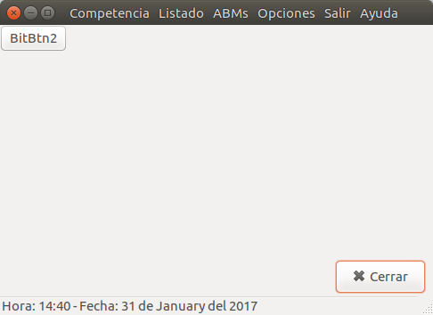

Este manual le ayudará en el uso del sistema para poder agregar inscripciones a las competencias a controlar.
Se encuentra en fase de desarrollo, por l que puede contener algunos errores. Al detectar alguno, por favor contactar con el desarrollador al correo: felipecaminos@gmail.com indicando que se realizaba al producirse el error, y de ser posible una captura de pantalla (tecla ImPan/PrtScr o similar).
Realizar Inscripciones
Cargar Posiciones
Generar Listados
